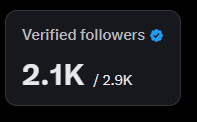

CHU_00B2
@chu_00b2
@twitcto 学到了

金水
@twitcto
今天看到一个帖子，说粉丝数多少和收益没关系，符合500 #蓝V 那就赶紧去开收益。
我懒得反驳
你去中文区找3K粉以下开通收益有几个收益稳定的？
你1K多粉就去开通收益，领工资，你每天能有多少人和你互动，浏览你。
真无语，粉丝数是为了让你收益开通后有稳定的浏览量。 https://t.co/HpcJZlWp0p